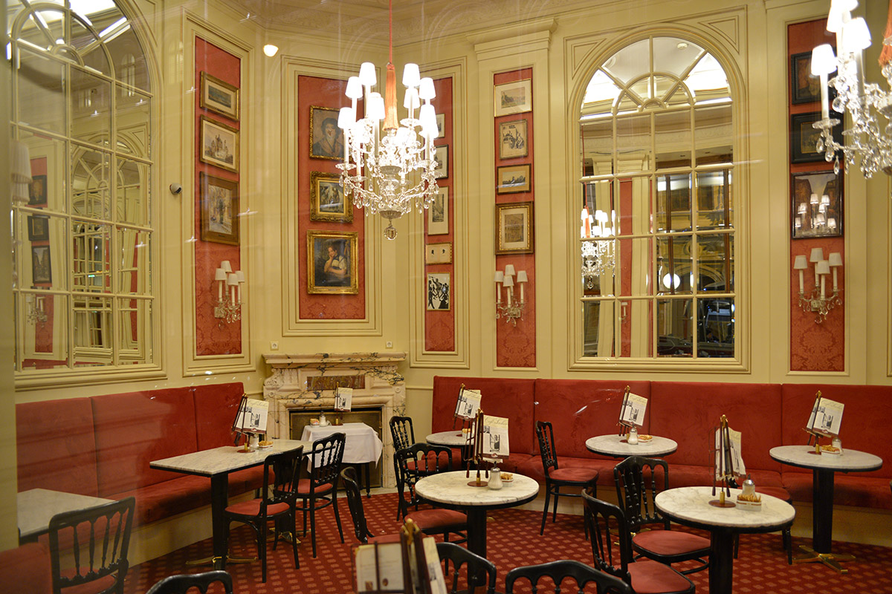

A neoreneszánsz stílusú, előkelő Ferstel-palotában, a Herrengasse 14. szám alatt található Café Central 1876-ban nyílt meg, és a századfordulóra a bécsi kulturális-szellemi élet legfontosabb központjává vált. A Heinrich von Ferstel által tervezett épület eredetileg az Osztrák-Magyar Bank és a bécsi tőzsde székhelye volt. A legendás irodalmi kávéház egykor a bécsiek és a városba látogató idegenek kedvelt találkozási pontja volt – és nincs másként ez napjainkban sem.A törzsvendégek közé tartozott Franz Kafka, Herzl Tivadar, Sigmund Freud, Arthur Schnitzler, de falai közt megfordult Lenin, Hitler és Sztálin is. Lev Trockij emigránsként élt Bécsben, és szintén rendszeres vendége volt a kávézónak – a legenda szerint innen szervezte az Oroszországban 1917-ben kitört forradalmat. A Monarchia aranykorában, amikor a Café Central a Bécsben élő művészek és hírességek első számú találkahelye volt, 22 különböző nyelven 250-féle napilap járt ide.
Annak ellenére, hogy az épület közel másfél évszázados, a belső terek modernek, a belső kialakításnál minden feltétel adott annak érdekében, hogy a stílust minél jobban megőrizzék, ami annak idején is volt. Ezért a "Sacher" kávézóban a látogatók antik bútorokat és festményeket láthatnak, és az étlap fel van írva a táblákra. Az is érdekes, hogy itt a pincérnők olyan egyenruhába vannak öltözve, ami inkább a cselédek öltözékére emlékeztet. Általában nagyon hangulatos és kényelmes itt. Ez a hely tökéletes egy pihentető nyaraláshoz a családdal, valamint üzleti beszélgetésekhez kötetlen környezetben.Először is szokatlan, hogy a menü teljes mértékben leírja magának a desszertnek és a kávézónak a keletkezésének történetét. A "Sacher" menüben természetesen különleges helyet foglal el az azonos nevű sütemény. Az eredeti recept szerint beszél és képviselcsokis keksz cukormázzal és baracklekvárral. Változatlanul cukrozatlan tejszínhabot tálalnak mellé. Sokféle formában kapható, a hagyományos háromszög alakú daraboktól a fánk alakú süteményekig. Rendelhető még almás-túrós rétes, csokireszelékes torta és tojáslikőr.
Egy egészen más műfaj az aprócska Fenster Cafe, ami tényleg az, amit a neve sugall: csak egy ablak a falon, ahol kizárólag kávéval foglalkoznak. Itt fagylalttölcsérbe felszolgált cappuccino is kapható, egy igazi instagramra született kávé-kompozíció. Mondjuk azt nem tudom, hogy a túróba nem ázik el a tölcsér, de hát ha a Holdra már feljut az ember, ezt is valahogy megoldják.